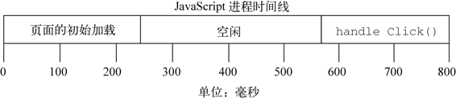
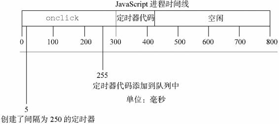
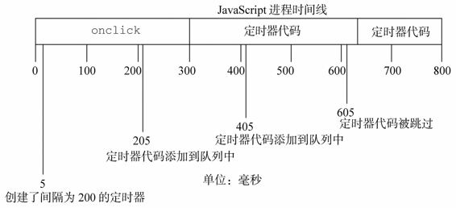

使用setTimeout()和setInterval()创建的定时器可以用于实现有趣且有用的功能。虽然人们对JavaScript的定时器存在普遍的误解，认为它们是线程，其实JavaScript是运行于单线程的环境中的，而定时器仅仅只是计划代码在未来的某个时间执行。执行时机是不能保证的，因为在页面的生命周期中，不同时间可能有其他代码在控制JavaScript进程。在页面下载完后的代码运行、事件处理程序、Ajax回调函数都必须使用同样的线程来执行。实际上，浏览器负责进行排序，指派某段代码在某个时间点运行的优先级。
可以把JavaScript想象成在时间线上运行的。当页面载入时，首先执行是任何包含在<script>元素中的代码，通常是页面生命周期后面要用到的一些简单的函数和变量的声明，不过有时候也包含一些初始数据的处理。在这之后，JavaScript进程将等待更多代码执行。当进程空闲的时候，下一个代码会被触发并立刻执行。例如，当点击某个按钮时，onclick事件处理程序会立刻执行，只要JavaScript进程处于空闲状态。这样一个页面的时间线类似于图22-1。

图 22-1
除了主JavaScript执行进程外，还有一个需要在进程下一次空闲时执行的代码队列。随着页面在其生命周期中的推移，代码会按照执行顺序添加入队列。例如，当某个按钮被按下时，它的事件处理程序代码就会被添加到队列中，并在下一个可能的时间里执行。当接收到某个Ajax响应时，回调函数的代码会被添加到队列。在JavaScript中没有任何代码是立刻执行的，但一旦进程空闲则尽快执行。
定时器对队列的工作方式是，当特定时间过去后将代码插入。注意，给队列添加代码并不意味着对它立刻执行，而只能表示它会尽快执行。设定一个150ms后执行的定时器不代表到了150ms代码就立刻执行，它表示代码会在150ms后被加入到队列中。如果在这个时间点上，队列中没有其他东西，那么这段代码就会被执行，表面上看上去好像代码就在精确指定的时间点上执行了。其他情况下，代码可能明显地等待更长时间才执行。
请看以下代码：
var btn = document.getElementById("my-btn");
btn.onclick = function(){
setTimeout(function(){
document.getElementById("message").style.visibility = "visible";
}, 250);
//其他代码
};
在这里给一个按钮设置了一个事件处理程序。事件处理程序设置了一个250ms后调用的定时器。点击该按钮后，首先将onclick事件处理程序加入队列。该程序执行后才设置定时器，再有250ms后，指定的代码才被添加到队列中等待执行。实际上，对setTimeout()的调用表示要晚点执行某些代码。
关于定时器要记住的最重要的事情是，指定的时间间隔表示何时将定时器的代码添加到队列，而不是何时实际执行代码。如果前面例子中的onclick事件处理程序执行了300ms，那么定时器的代码至少要在定时器设置之后的300ms后才会被执行。队列中所有的代码都要等到JavaScript进程空闲之后才能执行，而不管它们是如何添加到队列中的。见图22-2。

图 22-2
如图22-2所示，尽管在255ms处添加了定时器代码，但这时候还不能执行，因为onclick事件处理程序仍在运行。定时器代码最早能执行的时机是在300ms处，即onclick事件处理程序结束之后。
实际上Firefox中定时器的实现还能让你确定定时器过了多久才执行，这需传递一个实际执行的时间与指定的间隔的差值。如下面的例子所示。
//仅Firefox中
setTimeout(function(diff){
if (diff > 0) {
//晚调用
} else if (diff < 0){
//早调用
} else {
//调用及时
}
}, 250);
执行完一套代码后，JavaScript进程返回一段很短的时间，这样页面上的其他处理就可以进行了。由于JavaScript进程会阻塞其他页面处理，所以必须有这些小间隔来防止用户界面被锁定（代码长时间运行中还有可能出现）。这样设置一个定时器，可以确保在定时器代码执行前至少有一个进程间隔。
使用setInterval()创建的定时器确保了定时器代码规则地插入队列中。这个方式的问题在于，定时器代码可能在代码再次被添加到队列之前还没有完成执行，结果导致定时器代码连续运行好几次，而之间没有任何停顿。幸好，JavaScript引擎够聪明，能避免这个问题。当使用setInterval()时，仅当没有该定时器的任何其他代码实例时，才将定时器代码添加到队列中。这确保了定时器代码加入到队列中的最小时间间隔为指定间隔。
这种重复定时器的规则有2点问题：(1) 某些间隔会被跳过；(2) 多个定时器的代码执行之间的间隔可能会比预期的小。假设，某个onclick事件处理程序使用setInterval()设置了一个200ms间隔的重复定时器。如果事件处理程序花了300ms多一点的时间完成，同时定时器代码也花了差不多的时间，就会跳过一个间隔同时运行着一个定时器代码。参见图22-3。

图 22-3
这个例子中的第1个定时器是在205ms处添加到队列中的，但是直到过了300ms处才能够执行。当执行这个定时器代码时，在405ms处又给队列添加了另外一个副本。在下一个间隔，即605ms处，第一个定时器代码仍在运行，同时在队列中已经有了一个定时器代码的实例。结果是，在这个时间点上的定时器代码不会被添加到队列中。结果在5ms处添加的定时器代码结束之后，405ms处添加的定时器代码就立刻执行。
为了避免setInterval()的重复定时器的这2个缺点，你可以用如下模式使用链式setTimeout()调用。
setTimeout(function(){
//处理中
setTimeout(arguments.callee, interval);
}, interval);
这个模式链式调用了setTimeout()，每次函数执行的时候都会创建一个新的定时器。第二个setTimeout()调用使用了arguments.callee来获取对当前执行的函数的引用，并为其设置另外一个定时器。这样做的好处是，在前一个定时器代码执行完之前，不会向队列插入新的定时器代码，确保不会有任何缺失的间隔。而且，它可以保证在下一次定时器代码执行之前，至少要等待指定的间隔，避免了连续的运行。这个模式主要用于重复定时器，如下例所示。
setTimeout(function(){
var div = document.getElementById("myDiv");
left = parseInt(div.style.left) + 5;
div.style.left = left + "px";
if (left < 200){
setTimeout(arguments.callee, 50);
}
}, 50);
RepeatingTimersExample.htm
这段定时器代码每次执行的时候将一个<div>元素向右移动，当左坐标在200像素的时候停止。JavaScript动画中使用这个模式很常见。
每个浏览器窗口、标签页、或者框架都有其各自的代码执行队列。这意味着，进行跨框架或者跨窗口的定时调用，当代码同时执行的时候可能会导致竞争条件。无论何时需要使用这种通信类型，最好是在接收框架或者窗口中创建一个定时器来执行 代码。
运行在浏览器中的JavaScript都被分配了一个确定数量的资源。不同于桌面应用往往能够随意控制他们要的内存大小和处理器时间，JavaScript被严格限制了，以防止恶意的Web程序员把用户的计算机搞挂了。其中一个限制是长时间运行脚本的制约，如果代码运行超过特定的时间或者特定语句数量就不让它继续执行。如果代码达到了这个限制，会弹出一个浏览器错误的对话框，告诉用户某个脚本会用过长的时间执行，询问是允许其继续执行还是停止它。所有JavaScript开发人员的目标就是，确保用户永远不会在浏览器中看到这个令人费解的对话框。定时器是绕开此限制的方法之一。
脚本长时间运行的问题通常是由两个原因之一造成的：过长的、过深嵌套的函数调用或者是进行大量处理的循环。这两者中，后者是较为容易解决的问题。长时间运行的循环通常遵循以下模式：
for (var i=0, len=data.length; i < len; i++){
process(data[i]);
}
这个模式的问题在于要处理的项目的数量在运行前是不可知的。如果完成process()要花100ms，只有2个项目的数组可能不会造成影响，但是10个的数组可能会导致脚本要运行一秒钟才能完成。数组中的项目数量直接关系到执行完该循环的时间长度。同时由于JavaScript的执行是一个阻塞操作，脚本运行所花时间越久，用户无法与页面交互的时间也越久。
在展开该循环之前，你需要回答以下两个重要的问题。
该处理是否必须同步完成？如果这个数据的处理会造成其他运行的阻塞，那么最好不要改动它。不过，如果你对这个问题的回答确定为“否”，那么将某些处理推迟到以后是个不错的备选项。
数据是否必须按顺序完成？通常，数组只是对项目的组合和迭代的一种简便的方法而无所谓顺序。如果项目的顺序不是非常重要，那么可能可以将某些处理推迟到以后。
当你发现某个循环占用了大量时间，同时对于上述两个问题，你的回答都是“否”，那么你就可以使用定时器分割这个循环。这是一种叫做数组分块（array chunking）的技术，小块小块地处理数组，通常每次一小块。基本的思路是为要处理的项目创建一个队列，然后使用定时器取出下一个要处理的项目进行处理，接着再设置另一个定时器。基本的模式如下。
setTimeout(function(){
//取出下一个条目并处理
var item = array.shift();
process(item);
//若还有条目，再设置另一个定时器
if(array.length > 0){
setTimeout(arguments.callee, 100);
}
}, 100);
在数组分块模式中，array变量本质上就是一个“待办事宜”列表，它包含了要处理的项目。使用shift()方法可以获取队列中下一个要处理的项目，然后将其传递给某个函数。如果在队列中还有其他项目，则设置另一个定时器，并通过arguments.callee调用同一个匿名函数。要实现数组分块非常简单，可以使用以下函数。
function chunk(array, process, context){
setTimeout(function(){
var item = array.shift();
process.call(context, item);
if (array.length > 0){
setTimeout(arguments.callee, 100);
}
}, 100);
}
ArrayChunkingExample.htm
chunk()方法接受三个参数：要处理的项目的数组，用于处理项目的函数，以及可选的运行该函数的环境。函数内部用了之前描述过的基本模式，通过call()调用的process()函数，这样可以设置一个合适的执行环境（如果必须）。定时器的时间间隔设置为了100ms，使得JavaScript进程有时间在处理项目的事件之间转入空闲。你可以根据你的需要更改这个间隔大小，不过100ms在大多数情况下效果不错。可以按如下所示使用该函数：
var data = [12,123,1234,453,436,23,23,5,4123,45,346,5634,2234,345,342];
function printValue(item){
var div = document.getElementById("myDiv");
div.innerHTML += item + "<br>";
}
chunk(data, printValue);
ArrayChunkingExample.htm
这个例子使用printValue()函数将data数组中的每个值输出到一个<div>元素。由于函数处在全局作用域内，因此无需给chunk()传递一个context对象。
必须当心的地方是，传递给chunk()的数组是用作一个队列的，因此当处理数据的同时，数组中的条目也在改变。如果你想保持原数组不变，则应该将该数组的克隆传递给chunk()，如下例所示：
chunk(data.concat(), printValue);
当不传递任何参数调用某个数组的concat()方法时，将返回和原来数组中项目一样的数组。这样你就可以保证原数组不会被该函数更改。
数组分块的重要性在于它可以将多个项目的处理在执行队列上分开，在每个项目处理之后，给予其他的浏览器处理机会运行，这样就可能避免长时间运行脚本的错误。
浏览器中某些计算和处理要比其他的昂贵很多。例如，DOM操作比起非DOM交互需要更多的内存和CPU时间。连续尝试进行过多的DOM相关操作可能会导致浏览器挂起，有时候甚至会崩溃。尤其在IE中使用onresize事件处理程序的时候容易发生，当调整浏览器大小的时候，该事件会连续触发。在onresize事件处理程序内部如果尝试进行DOM操作，其高频率的更改可能会让浏览器崩溃。为了绕开这个问题，你可以使用定时器对该函数进行节流。
函数节流背后的基本思想是指，某些代码不可以在没有间断的情况连续重复执行。第一次调用函数，创建一个定时器，在指定的时间间隔之后运行代码。当第二次调用该函数时，它会清除前一次的定时器并设置另一个。如果前一个定时器已经执行过了，这个操作就没有任何意义。然而，如果前一个定时器尚未执行，其实就是将其替换为一个新的定时器。目的是只有在执行函数的请求停止了一段时间之后才执行。以下是该模式的基本形式：
var processor = {
timeoutId: null,
//实际进行处理的方法
performProcessing: function(){
//实际执行的代码
},
//初始处理调用的方法
process: function(){
clearTimeout(this.timeoutId);
var that = this;
this.timeoutId = setTimeout(function(){
that.performProcessing();
}, 100);
}
};
//尝试开始执行
processor.process();
在这段代码中，创建了一个叫做processor对象。这个对象还有2个方法：process()和performProcessing()。前者是初始化任何处理所必须调用的，后者则实际进行应完成的处理。当调用了process()，第一步是清除存好的timeoutId，来阻止之前的调用被执行。然后，创建一个新的定时器调用performProcessing()。由于setTimeout()中用到的函数的环境总是window，所以有必要保存this的引用以方便以后使用。
时间间隔设为了100ms，这表示最后一次调用process()之后至少100ms后才会调用performProcessing()。所以如果100ms之内调用了process()共20次，performanceProcessing()仍只会被调用一次。
这个模式可以使用throttle()函数来简化，这个函数可以自动进行定时器的设置和清除，如下例所示：
function throttle(method, context) {
clearTimeout(method.tId);
method.tId= setTimeout(function(){
method.call(context);
}, 100);
}
ThrottlingExample.htm
throttle()函数接受两个参数：要执行的函数以及在哪个作用域中执行。上面这个函数首先清除之前设置的任何定时器。定时器ID是存储在函数的tId属性中的，第一次把方法传递给throttle()的时候，这个属性可能并不存在。接下来，创建一个新的定时器，并将其ID储存在方法的tId属性中。如果这是第一次对这个方法调用throttle()的话，那么这段代码会创建该属性。定时器代码使用call()来确保方法在适当的环境中执行。如果没有给出第二个参数，那么就在全局作用域内执行该方法。
前面提到过，节流在resize事件中是最常用的。如果你基于该事件来改变页面布局的话，最好控制处理的频率，以确保浏览器不会在极短的时间内进行过多的计算。例如，假设有一个<div/>元素需要保持它的高度始终等同于宽度。那么实现这一功能的JavaScript可以如下编写：
window.onresize = function(){
var div = document.getElementById("myDiv");
div.style.height = div. offsetWidth + "px";
};
这段非常简单的例子有两个问题可能会造成浏览器运行缓慢。首先，要计算offsetWidth属性，如果该元素或者页面上其他元素有非常复杂的CSS样式，那么这个过程将会很复杂。其次，设置某个元素的高度需要对页面进行回流来令改动生效。如果页面有很多元素同时应用了相当数量的CSS的话，这又需要很多计算。这就可以用到throttle()函数，如下例所示：
function resizeDiv(){
var div = document.getElementById("myDiv");
div.style.height = div.offsetWidth + "px";
}
window.onresize = function(){
throttle(resizeDiv);
};
ThrottlingExample.htm
这里，调整大小的功能被放入了一个叫做resizeDiv()的单独函数中。然后onresize事件处理程序调用throttle()并传入resizeDiv函数，而不是直接调用resizeDiv()。多数情况下，用户是感觉不到变化的，虽然给浏览器节省的计算可能会非常大。
只要代码是周期性执行的，都应该使用节流，但是你不能控制请求执行的速率。这里展示的throttle()函数用了100ms作为间隔，你当然可以根据你的需要来修改它。